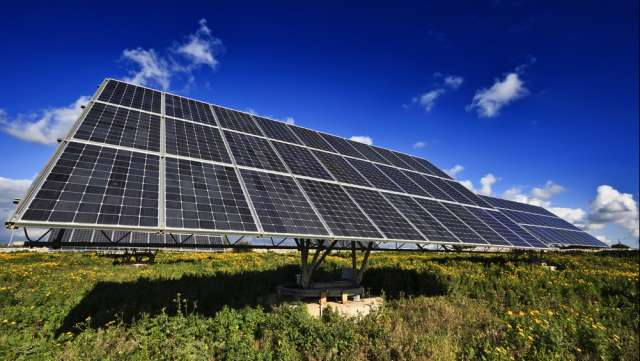
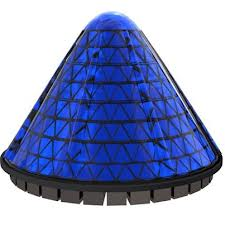
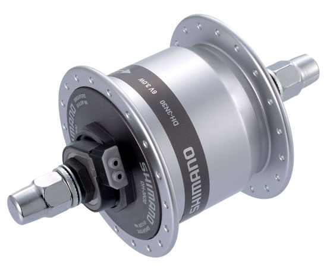
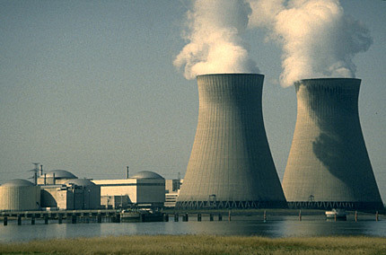
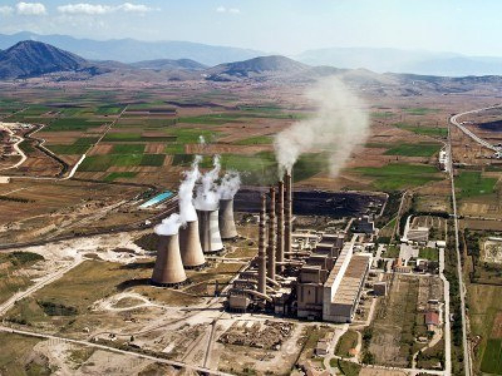
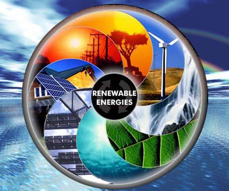
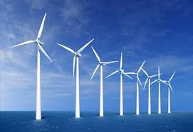
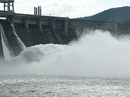
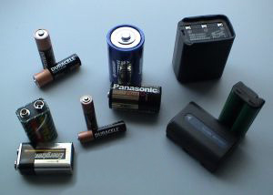

Risparmio Energia
Panelli Fotovoltaici |
Sfruttare l'energia solare è un tema sempre pi ù frequente ed attuale in questo periodo. Il perchè è presto detto. L'inquinamento mondiale sta aumentando sempre pi ù alla faccia del protocollo di Kyoto. I gas serra sono sempre più presenti e le mutazioni climatiche gi à si fanno intravedere con alcuni effetti devastanti.L'effetto fotovoltaico consiste nel trasformare l'energia solare in elettricit à. Questo processo è possibile grazie a specifiche proprietà fisiche di alcuni particolari elementi. L'elemento base della tecnologia fotovoltaica è la cella che può essere tra la varie caratteristiche anche monocristallina o policristallina. Con l' esposizione alla luce la cella produce energia elettrica in corrente continua che poi successivamente verrà trasformata in corrente alternata per poter essere utilizzata nei normali impianti elettrici domestici |  |
Panelli Fotovoltaici Conici |
Il fotovoltaico cambia forma e cambia prestazioni: grazie ai grandi passi avanti fatti dalla tecnologia e dalla ricerca sono stati realizzati dei pannelli fotovoltaici conici che amplificano di 20 volte la produzione energetica di un tradizionale pannello. Il pannello solare fotovoltaico, creato da V3Solar, ottimizza la resa dell’energia solare grazie alla sua struttura, capace di concentrare al meglio l’irragiamento, evitando ogni forma di dispersione. I pannelli solari conici si compongono di due involucri: uno, interno, costituito dalla superficie fotovoltaica vera e propria e uno, esterno, formato da un concentratore trasparente, realizzato con lenti tubolari e anelli di collegamento. Il cono interno è anche in grado di ruotare, evitando anche il problema del surriscaldamento. I test effettuati dimostrano che i pannelli fotovoltaici conici sono in grado di produrre, a parità di intensità luminosa, una quantità di energia elettrica superiore di 20 volte rispetto ai pannelli tradizionali. I nuovi pannelli sembrano aver già conquistato il mercato delle rinnovabili: l’azienda V3Solar ha già avuto ordini per 800.000 celle Spin, da installare in un grande parco solare. |  |
Dinamo |
Una dinamo è una macchina rotante per la trasformazione di lavoro meccanico in energia elettrica, sotto forma di corrente continua assumendo così la funzione di trasduttore.Nella sua forma più semplice consiste di una spira conduttrice (rotore) immersa in un campo magnetico (generato ad esempio da una coppia di magneti permanenti, i quali formano lo statore) e messa in rotazione da un albero. Per la legge di Faraday per l'induzione un conduttore che si muove in un campo magnetico (purché non parallelamente ad esso) vede nascere una forza elettromotrice indotta (fEM); chiudendo quindi la spira su un carico elettrico (ad esempio una lampadina, o un accumulatore) si può misurare una corrente scorrere nella spira stessa e nel carico (la lampadina si accende). |  |
Centrali a Combustibili Fossili |
I combustibili fossili consistono in depositi di organismi morti, la materia organica impiega secoli per formarsi e consiste principalmente di carbonio e idrogeno legati. Esistono tre tipi di combustibili fossili che possono essere usati per la produzione energetica: carbone, olio e gas naturale. Il carbone e' un combustibile fossile formatosi nell'arco di milioni di anni dal decadimento della vegetazione: i depositi si trasformano in carbone quando strati vengono compattati e riscaldati nel tempo. Il carbone e' molto abbondante rispetto agli altri combistibili fossili e degli studi analitici sostengono che se le riserve di petrolio si esauriranno il suo consumo mondiale aumentera' notevolmente. Le attuali riserve di carbone potrebbero durare per 200 anni o piu'. Il carbone viene estratto dalle miniere e dalla meta' del 20esimo secolo il suo consumo e' duplicato, per poi decrescere leggermente dal 1996 a causa dello sviluppo di petrolio e gas naturale. I paesi in via di sviluppo consumano quasi esclusivamente carbone perche' non possono permettersi petrolio e gas naturale. Anche Cina e India sono tra i principali consumatori di carbone. Il petrolio e' un combustibile fossile gassoso che si forma da depositi di microorganismi marini formatisi sul fondo del mare. Dopo milioni di anni i depositi finiscono in rocce o sedimenti dove l'olio e' intrappolato in piccoli spazi dai quali puo' essere estratto tramite trivellazione da apposite piattaforme. Il petrolio e' il combustibile piu' usato al mondo. L'olio crudo consiste in molti diversi organsmi che sono trasformati tramite processo di raffinazione, e' usato un automobili, jets, coperture stradali, tetti e in molte altre applicazioni. Il petrolio non si trova ovunque sulla terra e di conseguenza e' causa di guerre tra i vari paesi, per esempio la Guerra del Golfo del 1991. Il gas naturale e' un combustibile fossile gassoso versatile, abbondante e relativamente pulito rispetto a carbone e petrolio. Come quest'ultimo si forma da depositi di migroorganismi marini morti, e' un tipo di energia piuttosto giovane, finmo al 1999 veniva usato piu' carbone di gas naturale, ma oggi il consumo di gas naturale ha superato quello del carbone nei paesi sviluppati, ma la gente teme che le riserve di gas naturale si esauriranno come quelle di petrolio, alcuni scienziati hanno addirittura previsto che cio' avverra' prima della fine del 21esimo secolo. Il gas naturale consiste per la maggior parte di metano (CH4), compresso in piccoli volumi a grande profondita'. Come il petrolio e' portato in superficie tramite trivellazione. |  |
Centrali a Combustibili Naturali |
Gli esseri umani hanno bisogno di energia per quasi tutte le funzioni che svolgono: per riscalsare le case, per agricoltura e industria e perfino nel nostro corpo ha luogo un continuo flusso energetico. Non possiamo vivere senza una continua produzione energetica, processo industriale che avviene usando diverse fonti, che possono essere rinnovabili o non rinnovabili. Le risorse rinnovabili vengono continuamente rinnovate nel tempo, e quindi non si esauriranno facilmente, mentre le risorse energenitche non rinnovabili minacciano di esaurirsi se il nostro consumo standard diventa troppo alto. |  |
Centrali Alternative |
Le fonti di energia alternative sono fonti energetiche in alternativa al petrolio, al gas naturale e al carbone che sono i combustibili più usati per produrre energia. Esse sono chiamate anche fonti energetiche rinnovabili perché costituite da materie prime che si formano e si rinnovano continuamente, come l’acqua, il calore terrestre, il vento e il calore solare. Da ognuno di questi elementi naturali si ricava un quantitativo energetico pari al 5% della produzione mondiale; da questa statistica si può comprendere quanto queste fonti alternative siano ancora poco sfruttate. Queste fonti di energia sono oltre che rinnovabili anche pulite, cioè non inquinano l’ambiente e l’atmosfera, a differenza dei combustibili fossili. Esistono diversi modi per produrre energia con le fonti rinnovabili. Per esempio l’acqua dei fiumi è usata per produrre energia elettrica attraverso le centrali idroelettriche. Questo è uno dei sistemi più semplici per produrre energia elettrica nel campo delle fonti alternative. Il calore del sole, o meglio, le radiazioni solari vengono trasformate attraverso le celle fotovoltaiche in energiaelettrica. Queste celle vengono sistemate su pannelli solari installati sui tetti delle abitazioni. Recentemente con questi pannelli solari alcune case e appartamenti riescono ad avere energia elettrica a sufficienza per il fabbisogno energetico interno e riescono addirittura ad averne in sovrappiù. I pannelli solari però sono stati utilizzati anche per delle centrali solari elettriche: questo progetto però è stato ostacolato dai costi elevatissimi che hanno queste strutture e per questo ce ne sono veramente poche in tutto il mondo. Una terza modalità di utilizzo dell’energia solare sarà in futuro quella di poter ricavare dall’acqua l’idrogeno, un gas pulito (quando brucia produce acqua) che potrà sostituire il petrolio. Si produce energia anche sfruttando la potenza del vento con dei generatori eolici, mentre le centrali geotermiche utilizzano il calore terrestre che fuoriesce dal suolo sottoforma di vapore acqueo. Ovviamente si stanno studiando dei modi per poter sfruttare al meglio queste fonti di energia anche perchè gli studiosi hanno constatato che in meno di un secolo le riserve petrolifere di tutto il mondo si dovrebbero esaurire. |  |
Centrali Eoliche |
Una centrale eolica è costituita essenzialmente da turbine rotanti dette aeromotori eolici o aerogeneratori che con il loro movimento inducono un campo elettromagnetico producendo energia elettrica. Nell'incontro con le pale della turbina, il vento perde circa il 40% della propria energia cinetica, che viene utilizzata per azionare la turbina; l'energia meccanica prodotta viene poi trasformata in energia elettrica dal generatore. |  |
Centrali Idroelettrica |
Per centrale idroelettrica si intende una serie di opere di ingegneria idraulica posizionate in una certa successione, accoppiate ad una serie di macchinari idonei allo scopo di ottenere la produzione di energia elettrica da masse di acqua in movimento. L'energia prodotta dalle centrali idroelettriche è da classificarsi a tutti gli effetti come energia rinnovabile in quanto, almeno in teoria, l'acqua può essere riutilizzata infinite volte per lo stesso scopo senza subire un processo di depurazione. Il concetto di rinnovabilità è subordinato alla costanza del volume annuo degli afflussi integrali. |  |
Accumulatori |
Gli accumulatori di carica elettrica o batterie ricaricabili o pile secondarie o accumulatori (abbreviato in accu/akku) sono batterie la cui carica può essere completamente ristabilita mediante l'applicazione di un'adeguata energia elettrica. Le caratteristiche fondamentali sono la tensione ai morsetti (espressa in volt) e la capacità (espressa in ampereora). Alcuni tipi di batterie ricaricabili sono suscettibili di danni dovuti a una scarica completa (Pb, Li-ion) mentre altre devono essere ciclicamente scaricate onde evitare un rapido degrado delle prestazioni (effetto memoria in inglese lazy battery, isteresi). Tentare di ricaricare batterie non-ricaricabili (primarie) può provocare un pericoloso surriscaldamento dell'elettrolita fino a provocarne la fuoriuscita o l'esplosione. Ne esistono di vari tipi, con diverse capacità elettriche, differenti composizioni chimiche, forma e dimensioni. Tra le batterie secondarie (o accumulatori) si annoverano: |  |
 |
||
| |
||
| |
||
| |
||
| |
Centro Formazione Professionale Galdus. Sede Via Pompeo Leoni 2 .